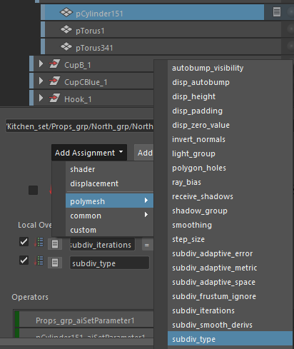
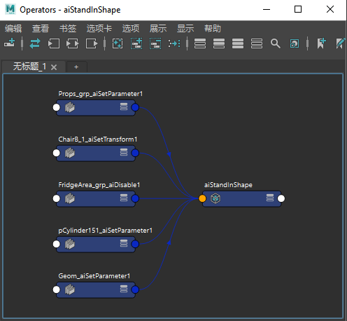

使用 Arnold 渲染的 USD 厨房集资源
在本教程中，我们将介绍如何从 Pixar USD 下载页面打开 kitchen_set.USD 文件。其中一种方法是使用 Arnold 程序 （MtoA 的替代对象）。这是可以单独加载 Arnold 的代理节点，但我们也可以直接加载 USD 文件。我们将介绍如何应用不同的外观和着色器，以及如何使用运算符更改 USD 文件的内容。
| 要下载对应的 kitchen_set.USD 文件，请单击此处。 |
|---|
有关 USD 的详细信息，请单击此处。
如果我们查看替代对象的“文件内容”(File Contents)，可以看到 kitchen_set USD 文件的内容。您可以在 Arnold 渲染视图窗口中选择对象，并在视口和“文件内容”(File Contents)列表中查看所选内容。
我们对 USD 文件的内容创建一些覆盖。
除了着色器覆盖，我们还可以覆盖网格的所有 Arnold 属性（如细分）。例如，我们可以看到，墙上的铸铁几何体 (/Kitchen_set/Props_grp/North_grp/NorthWall_grp/CastIron_1/Geom/pCylinder151) 具有较少的细分数。

现在，您应该注意到，该几何体是平滑的，不像以前未使用多边形网格覆盖时那样是面状的。
我们还可以应用 Arnold 运算符来隐藏几何体。
/Kitchen_set/Props_grp/North_grp/FridgeArea_grp使用 Disable 运算符隐藏冰箱组
我们还可以使用 Arnold 运算符移动对象。
使用 aiSetTransform 运算符转换椅子

运算符 -> 替代对象
现在，我们可以创建多个版本或“外观”，以更改可用于外观制作目的的外观。
| “Props”外观可见，其他几何体已使用运算符进行禁用（隐藏） | “默认”外观 |
可以在资源、镜头甚至应用程序之间传递运算符。在照明阶段，您可能想要进行一些最后的更改，此时可以将其作为覆盖应用于场景中。
现在，我们将运算符导入到新的 USD 厨房场景后：“Arnold -> 运算符 -> 导入运算符图表”(Arnold -> Operators -> Import Operator Graph)，您应该会在“节点编辑器”(Node Editor)窗口中看到这些运算符。您只需连接替代对象的 lookSwitch -> 运算符。
导入的运算符连接到替代对象
希望您能够了解在 Arnold 中渲染时运算符和 USD 提供的强大功能。通过此工作流，您在应用程序之间切换时可以获得相同的外观，同时保留完全相同的渲染。